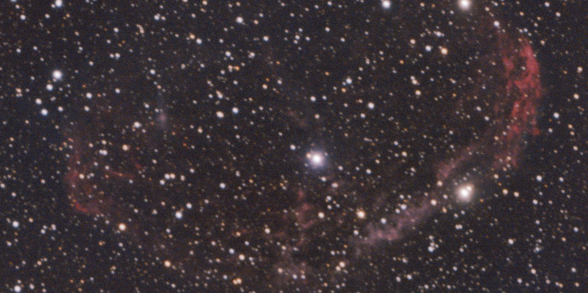
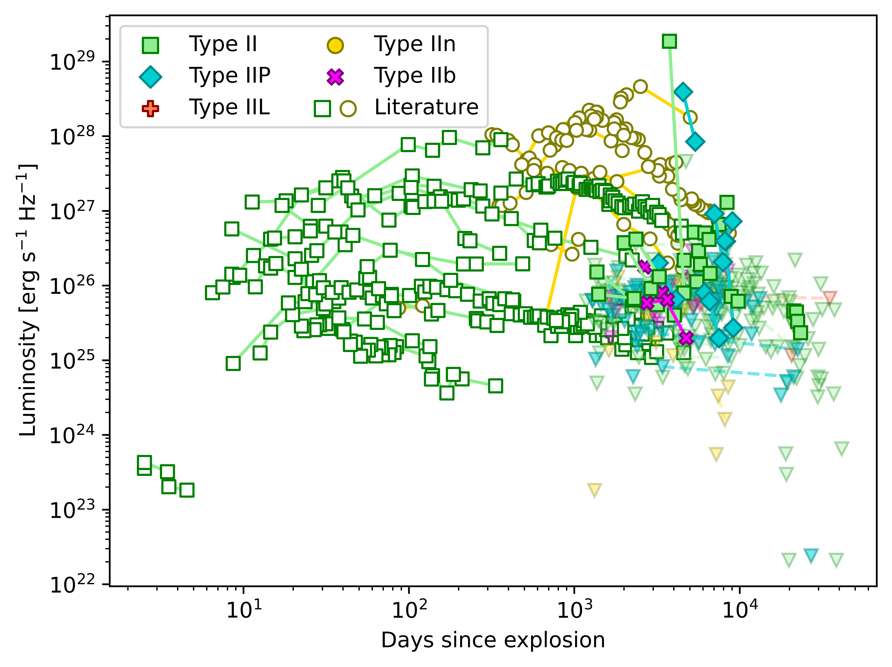
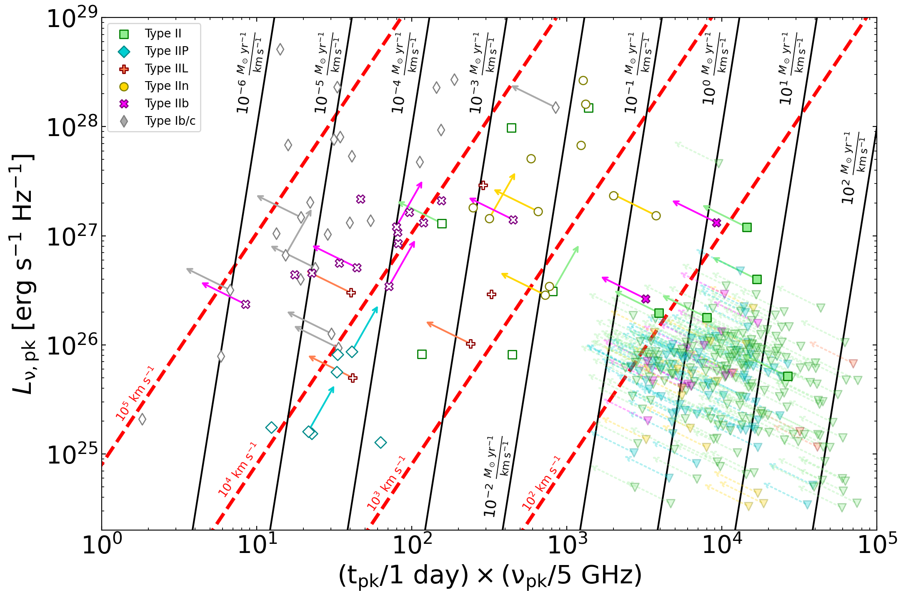

About Me

Hello! I'm Luke. Here is a brief summary of my little corner of the universe:
I am currently a senior at Dartmouth College studying physics and astronomy. When I'm not hunched over my
computer debugging my Python scripts, I like to get outside and enjoy nature. Some of the outdoor
shenanigans I partake in include Nordic skiing and biathlon, trail running, and hiking. As a huge metalhead,
I love listening to music and attending concerts whenever possible, and have taken up guitar-shredding as
one of my favorite hobbies. Another dear hobby of mine is my quest to teach myself astrophotography. Any space
pictures you see on this website – unless attached to a research project – are images which I have
taken and reduced myself. If you're interested in following my journey and looking at my ever-expanding collection
of pretty pictures, consider checking out my Substack!
Education: B.A. Physics (2027); PhD Astrophysics/some variant of astrophysics (future)
Research Interests: Observational astronomy, black holes, compact objects, galaxies, transients
Publications: [under construction]
Research

Characterizing Mass-Loss Rates of Type II Supernova Progenitors with Late-Time Radio Observations
As my project for the CIERA REU, I worked with
Dr. Tarraneh Eftekhari on using radio observations of over 300
Type II supernovae (SNe) to constrain the mass-loss rates of their progenitors in the final decades to centuries
before death. To check out my work for this project in depth, click here.
Fitting Multi-Gaussian Expansions to Local Massive ETGs
At my home institution of Dartmouth College, I have worked with Dr. Jonathan Cohn
on fitting multi-Gaussian expansions to local massive early-type galaxies (ETGs) to enable mass measurements of the
supermassive black holes (SMBHs) they host.
Contact
Email: luke.a.moffett.27 AT dartmouth.edu
Characterizing Mass-Loss
Rates of Type II Supernova
Progenitors with Late-Time
Radio Observations
2026 CIERA REU

In the summer of 2026 I participated in an REU offered by Northwestern University's Center for Interdisciplinary Exploration
and Research in Astrophysics (CIERA). I worked with Dr. Tarraneh Eftekhari
on using late-time radio observations to constrain the mass-loss rates of Type II supernova progenitors in the final
decades to centuries before explosion. By probing the circumstellar matter surrounding these sources at larger physical
scales than ever before, we imposed new, late-time constraints on the radio emission of Type II supernovae.

During this project I worked with late-time VLA observations of 307 Type II supernovae (SNe II) in an effort to
characterize how their progenitors lose mass shortly before their explosive deaths. My work consisted of producing
light curves of all detected sources, using those light curves in conjunction with optical data to evaluate sources
as SN candidates, fitting models to SEDs with MCMC, and plotting results on a Chevalier diagram (see image above).
The REU culminated in a summary paper and a couple poster sessions. You can view my summer poster
here.